P01 · Adult close-up
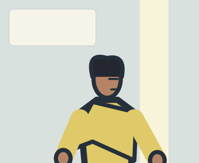
Nera steadies a trembling breath, looking toward the exit light.
Mature face and cape close-up; lower body deliberately cropped. Exit light is screen-right.
P02 · Two-character promise
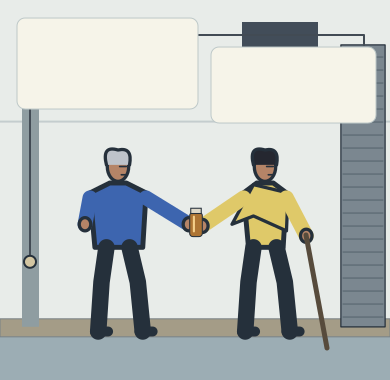
Odo offers Nera the sealed flask; she asks him to hold the exit.
One flask at the shared handoff; Odo left, Nera right. Both west of closed exit.
P03 · Geography
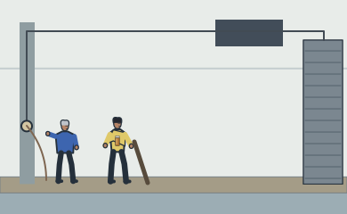
Wide gallery: west entry left, shallow water center, exit shutter right, overhead dark recess. No monster visible.
No visible monster. Left pillar release connects overhead to right shutter. Long free cord hangs at west pillar.
P04 · System primer
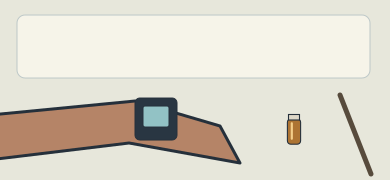
Wrist display establishes three charges and one of two verified counters needed to unlock Air Brake; Nera checks flask/staff.
Display is blank for live UI overlay in reserved upper margin. Flask and intact staff are insert detail, not duplicated in another hand.
P05 · Vertical threat reveal
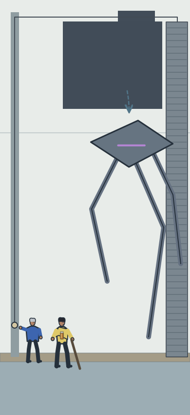
A slate kite-bodied three-legged sentinel unfolds from the overhead recess into the east route.
Long visual descent: dark overhead recess, kite body, exactly three unfurling legs, small west-side adults. Sentinel blocks east route; no attack contact yet.
P06 · Anticipation
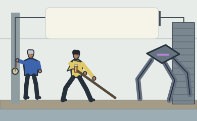
Nera plants on the dry ridge and lowers the staff; Odo reaches the shutter release from the west side.
Staff lowers across the forefoot path without touching yet. Odo reaches west release.
P07 · Attack
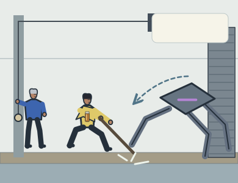
Sentinel lunges right-to-left; forefoot line crosses the ridge and splashes water.
Right-to-left lunge. Forefoot still separated from staff by a small visible gap; contact is next panel.
P08 · Counter
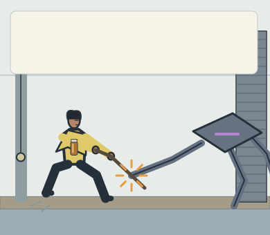
Nera spends one pulse to brake the forefoot with her staff; bent knees and staff compression show force.
Staff/forefoot contact center is (190,254). Bent knees oppose leftward force; violet gill remains active. UI overlay must show 3 to 2 and second-counter unlock.
P09 · Reversal
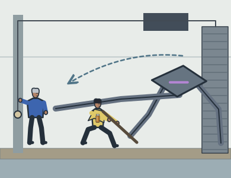
The sentinel pivots around the blocked foot, sweeping its side limb toward Odo at the release.
Pivot around still blocked forefoot; a DIFFERENT leg extends toward Odo on west pillar. A curved vector makes reversal distinct from first lunge.
P10 · Trust decision
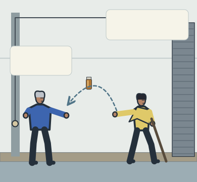
Nera tosses the sealed flask toward Odo’s free hand; reciprocal eyelines make the timing clear.
One flask only, cap upward on arc Nera right to Odo left. Nera sling empty. Odo left hand remains assigned release cord; right catches.
P11 · Committed movement
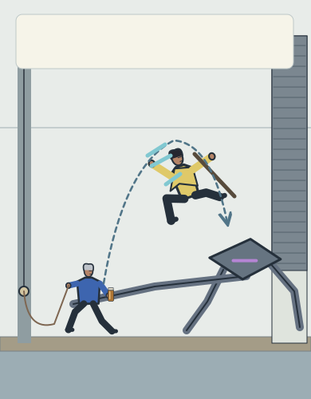
Nera uses newly unlocked Air Brake to halt her vault above the sweep, then redirect toward contact; Odo pulls the west release cable to raise the east shutter.
Only one Nera body. Dashed trajectory rises from west, stalls at cyan braking bars, then redirects down-right. Odo carries upright flask and continuous release cord, starts east. Shutter visibly raised.
P12 · Impact
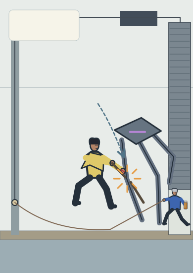
Nera’s staff strikes the sentinel forelimb joint as the shutter opens. The staff breaks at the contact, scraping her hand.
ONE contact at forelimb joint (257,360), exposed between two staff pieces. Small red scrape on Nera right hand; no cloud hides contact. Odo slips through screen-right opening, flask upright, cord continuous.
P13 · Aftermath
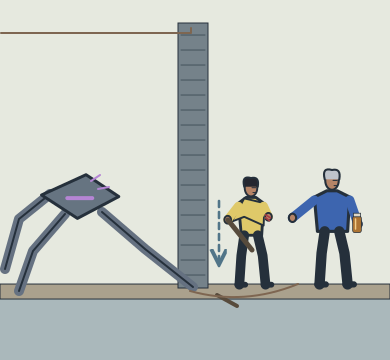
Beyond the opening, Odo releases the cord so the shutter drops behind both adults and pins the sentinel foreleg on the west side. Nera holds the broken staff.
Camera moves east with adults while preserving west-left/east-right axis. Door is now screen center, both adults to its RIGHT. Living violet-gill sentinel remains left; foreleg pinned under bottom edge. Free cord falls slack on east floor.
P14 · Quiet breath
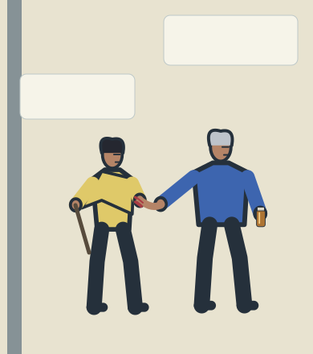
Beyond the door Odo steadies Nera’s scraped hand beside the sealed flask. They breathe, then turn toward the next passage.
Odo steadies Nera scraped hand at shared center; separate outer hand holds one sealed upright flask. Nera retains short broken staff. Final charge1 state remains recorded, not automatically inferred from cropped wrist.